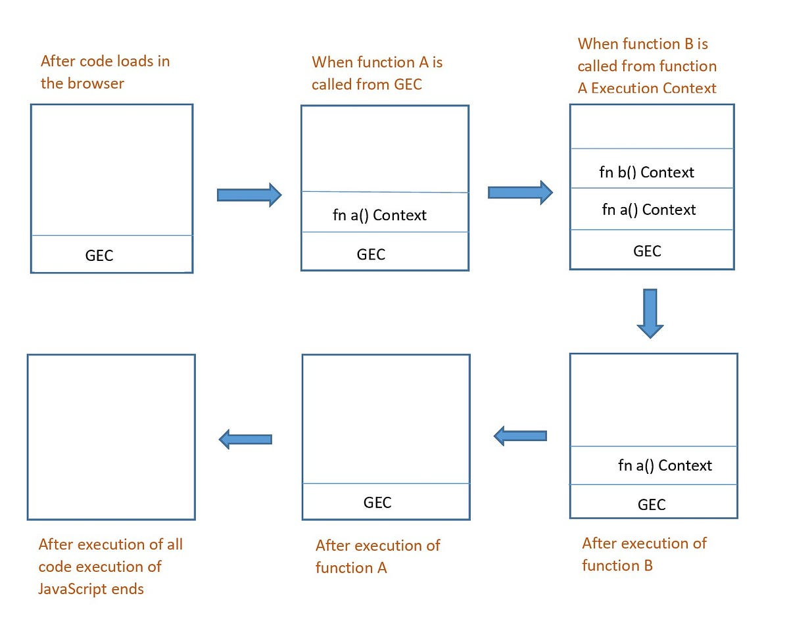

Execution Context
Execution context is the concept for describing the internal working of a code.
Example

var x = 10;
function foo(a, b) {
var y = 5;
console.log(a + b + x + y);
}
foo(3, 2);
Global Execution Context:
- When the script is loaded, the global execution context is created. It includes the global object (`window` in a browser environment) and the global scope.
- In this example, the variable `x` is declared in the global scope and assigned a value of 10.
Function Execution Context (foo):
- When the `foo` function is invoked (`foo(3, 2)`), a new function execution context is created for `foo`.
- The function execution context for `foo` includes the function arguments (`a = 3` and `b = 2`), local variables, and inner functions.
- Inside the `foo` function, the variable `y` is declared in the function's scope and assigned a value of 5.
Console Log:
- Within the `foo` function, the `console.log(a + b + x + y)` statement is executed.
- The JavaScript engine starts resolving variables and expressions within the current execution context.
- It first looks for `a` and `b` in the function's scope and finds their respective values (`3` and `2`).
- Next, it looks for `x` within the function's scope but doesn't find it. So, it goes up the scope chain to the global scope and finds the value of `x` as `10`.
- Similarly, it looks for `y` within the function's scope and finds its value as `5`.
- The expression `a + b + x + y` is evaluated to `3 + 2 + 10 + 5`, resulting in `20`.
- Finally, the value `20` is passed to the `console.log` function, and it gets printed in the console.
Execution Context Cleanup:
- Once the execution of the `console.log` statement is completed, the function execution context for `foo` is no longer needed.
- The JavaScript engine pops the function execution context off the execution stack, and control returns to the global execution context.
- The program continues to execute any remaining code in the global scope.
This example demonstrates how the execution context is created and used in JavaScript. Each time a function is invoked, a new function execution context is created and added to the execution stack. The execution context keeps track of variables, functions, and the scope chain to ensure proper variable resolution and access. Once a function completes its execution, its execution context is removed from the stack, and control returns to the previous execution context.